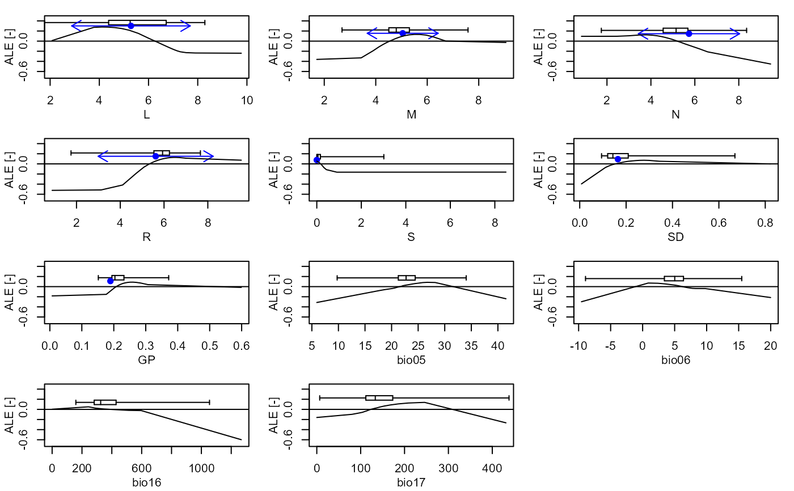
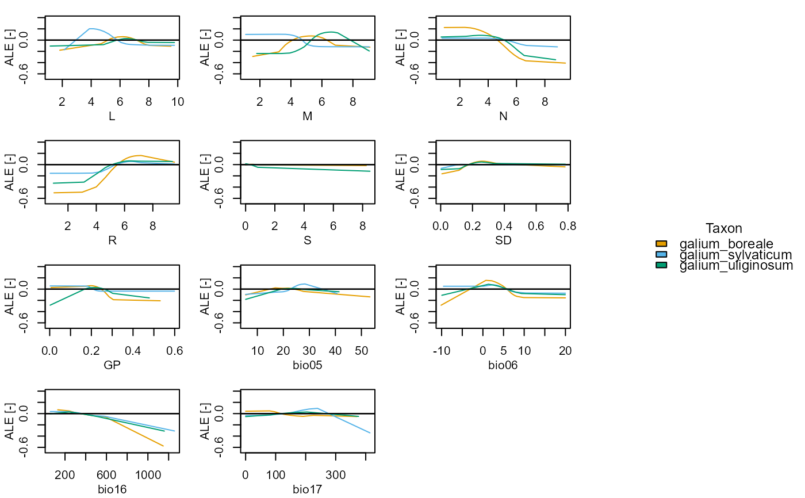

Plot the marginal effect values for one or more taxa and set of variables
Source:R/plot_me.R
plot_me.RdPlot the Accumulated Local Effect (ALE) or Partial Dependence Profile (PDP) (Molnar, 2018; Molnar, 2022) marginal effect curves for one or more taxa and a set of variables.
Usage
plot_me(
taxa,
me_type = "pdp",
free_y = TRUE,
presences = TRUE,
eivs = TRUE,
normalise = TRUE,
vars = c("L", "M", "N", "R", "S", "SD", "GP", "bio05", "bio06", "bio16", "bio17"),
lmw = 15,
lts = 0.75
)Arguments
- taxa
A vector of one or more taxon_code strings, see
elements::TaxonomicBackbone.- me_type
A string representing the marginal effect plot type, one of "ale" or "pdp".
- free_y
A boolean. If TRUE the Y axis scales are independent and free for all subplots. If FALSE the Y axis scales are fixed between all subplots.
- presences
A boolean. If TRUE a box and whiskers plot showing the distribution of presences along each variable will be displayed.
- eivs
A boolean. If TRUE a point representing the EIV value and arrows representing the EIV niche widths for the taxon will be displayed, where available in
elements::VariableData.- normalise
A boolean. If TRUE and me_type == "pdp" the y axes are normalised using min-max re-scaling.
- vars
A vector of variables. Must include atleast one of the following columns: "L", "M", "N", "R", "S", "SD", "GP", "bio05", "bio06", "bio16", and "bio17".
- lmw
The width of the outer margin containing the legend, passed to the "oma" argument of
graphics::par. Adjust to ensure the legend is given enough room.- lts
The size of the legend text, passed to the "cex" argument of
graphics::legend. Adjust to ensure the legend text size is appropriate.
Value
A composite plot showing the marginal effects and optionally the distribution of presences for selected model variables.
Details
If the number of taxa is one, setting the 'presences' argument to TRUE a box and whiskers plot showing the distribution of presences is
overlaid and by setting the 'eivs' argument to TRUE a point and arrows showing the EIV and niche width values are overlaid,
where available in elements::VariableData.
The presence-absence imbalance in the training data varies by taxon. This 'ghost of imbalance' (Jiménez-Valverde & Lobo, 2006) has several impacts on the PDP plots:
the optimum value of the PDP curve may be less than 1.
the entire PDP curve may sit below y = 0.5 (the presence-absence threshold).
When inspecting the PDP plots, it is therefore important to pay more attention to the shape of the response, rather than the absolute PDP value. However, by setting the normalise argument to TRUE, the PDP plot data is transformed using min-max normalisation/re-scaling.
In some instances the ALE curves may reflect 'inverted' responses which are not ecologically realistic, this is most often seen in situations where the distribution of presences along a variable gradient is extremely narrow and/or where there is a non-unimodal distribution, which causes extrapolation issues in the ALE calculations. For example, Gymnocarpium robertianum has a extremely narrow distribution of plot-mean S values, with a maximum value of 1. In these instances it is important to also visualise the PDP plots, which should then be prioritised when inspecting the shape of the univariate response.
References
Jiménez-Valverde, A., Lobo, J.M., 2006. The ghost of unbalanced species distribution data in geographical model predictions. Diversity and Distributions 12, 521–524. https://doi.org/10.1111/j.1366-9516.2006.00267.x
Molnar, C., 2018. iml: An R package for Interpretable Machine Learning. Journal of Open Source Software 3, 786. https://doi.org/10.21105/joss.00786
Molnar, C., 2022. Interpretable Machine Learning: A Guide For Making Black Box Models Explainable. Independently published, Munich, Germany.
Examples
elements::plot_me(taxa = "ajuga_reptans", me_type = "ale", free_y = FALSE, presences = TRUE, eivs = TRUE, normalise = TRUE, vars = c("L", "M", "N", "R", "S", "SD", "GP", "bio05", "bio06", "bio16", "bio17"))
 elements::plot_me(taxa = c("galium_boreale", "galium_sylvaticum", "galium_uliginosum"), me_type = "ale", free_y = FALSE, presences = TRUE, normalise = TRUE, eivs = TRUE, vars = c("L", "M", "N", "R", "S", "SD", "GP", "bio05", "bio06", "bio16", "bio17"))
elements::plot_me(taxa = c("galium_boreale", "galium_sylvaticum", "galium_uliginosum"), me_type = "ale", free_y = FALSE, presences = TRUE, normalise = TRUE, eivs = TRUE, vars = c("L", "M", "N", "R", "S", "SD", "GP", "bio05", "bio06", "bio16", "bio17"))

